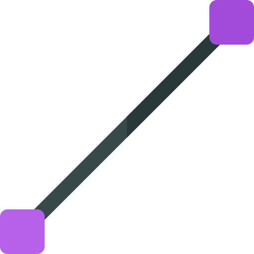

EDUCACIÓN CONTINUA
CURSO: ELECTRICIDAD BÁSICA
Instructor
Francisco Ruvalcaba Grandos
# Mediciones Eléctricas  Es importante ser capaz de medir los niveles de corriente y voltaje de un sistema eléctrico en operación para verificar su funcionamiento, aislar las disfunciones e investigar los efectos imposibles de predecir en documentos. Como sus nombres lo indican, los amperímetros se utilizan para medir niveles de corriente; con los voltímetros, se mide la diferencia de potencial entre dos puntos. En la industria, los niveles de voltaje se miden con más frecuencia que los niveles de corriente, sobre todo porque la medición de los primeros no implica perturbar las conexiones de la red. --- # Multímetro